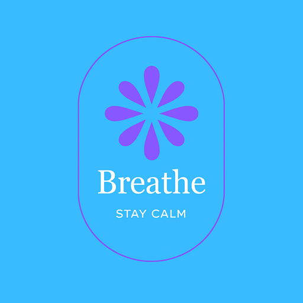

Vibing
SG
Home
Resources
About
Self-help Toolkits
Explore curated articles and tips to support your mental wellness and academic success.
Deep Breathing

Deep Breathing
Pomodoro Counter
Pomodoro Timer - Online tool for focused study
Chat with a Bot
Mindline.sg - Chat with a wellbeing support bot
Stress management
Coping with Stress (Mindline.sg)
Mental Well-being for Youths (NCSS)
Building Resilience (Mindline.sg)
Exam Preparation Tips
Exam Preparation: Ten Study Tips (Top Universities)
Tips for Effective Exam Preparation (Cambridge International)
Study Tips: How to be Exam-Ready (PSB Academy)
Time Management Tips
Essential Time Management (Skills You Need)
Time Management Tools (Mind Tools)
Pomodoro Technique (Todoist)